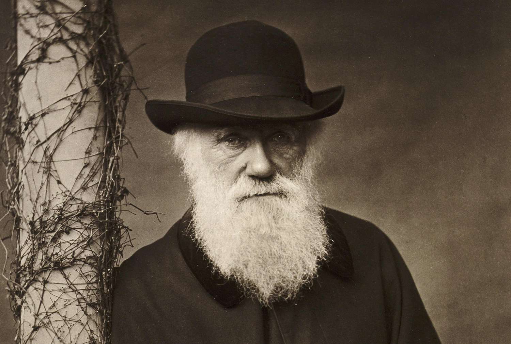
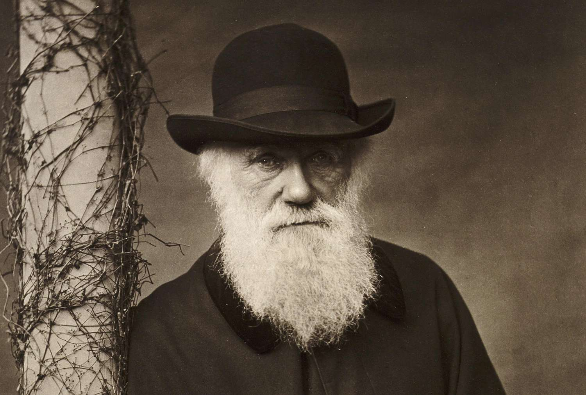

Jean-Baptiste Lamarck and Charles Darwin both made significant contributions to how we understand the classification of animals, though their approaches were rooted in different ideas about evolution. Lamarck, in the early 19th century, proposed that organisms evolve over time through the use and disuse of organs, with traits acquired during an organism’s life being passed to its offspring. In terms of classification, Lamarck emphasized the idea that organisms could be arranged according to their complexity and level of adaptation to the environment. He grouped animals based on structural features, physiological functions, and evolutionary progression, suggesting a gradual development from simple to more complex forms. While his mechanism of evolution—inheritance of acquired traits—was later disproven, his focus on adaptation and gradual change influenced future taxonomic thought.
Charles Darwin, later in the 19th century, revolutionized classification by introducing the concept of natural selection as the primary driver of evolution. For Darwin, classification was not just about grouping organisms by physical traits but about reflecting their common ancestry and evolutionary relationships. Species that shared more recent common ancestors were grouped closer together, forming the basis for a “tree of life” model. Darwin’s approach laid the foundation for phylogenetic classification, where evolutionary history determines relationships rather than just structural similarity. Today, modern taxonomy combines Darwin’s evolutionary perspective with genetic data to classify animals in a way that accurately reflects both their physical traits and evolutionary lineage.